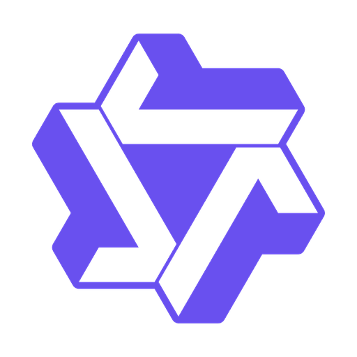
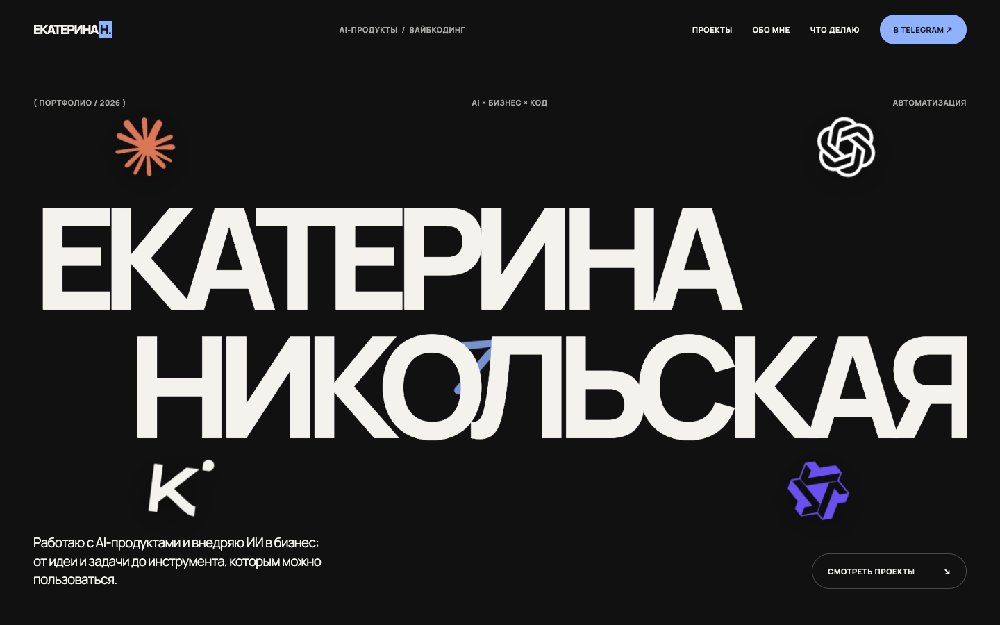

AI-продукты
Продумываю путь от задачи и сценария использования до работающего инструмента.
Работаю с AI-продуктами и внедряю ИИ в бизнес: от идеи и задачи до инструмента, которым можно пользоваться.
↓



НАПРАВЛЕНИЯ
Технология должна работать.
Из идеи — в инструмент, которым можно пользоваться.
ОБО МНЕ
Работаю с AI-продуктами и внедряю ИИ в бизнес. Разбираюсь, какую задачу нужно решить, как встроить ИИ в привычный процесс и каким должен быть результат для человека, который будет им пользоваться.
Здесь показываю, как собираю и проверяю цифровые инструменты: сайты, помощников и автоматизации. Делюсь промптами и понятными шагами, чтобы вы могли попробовать это в своей работе.
МОЙ TELEGRAM ↗
↗Соберём сайт-визитку без ручного написания кода.
01 / УЧЕБНЫЙ ПРОЕКТОдна регулярная задача и проверка её выполнения.
05 / УЧЕБНЫЙ ПРОЕКТЗаметки и источники, связанные в одном месте.
10 / УЧЕБНЫЙ ПРОЕКТОт заявки до записи и передачи сложного случая человеку.
14 / УЧЕБНЫЙ ПРОЕКТЧТО ДЕЛАЮ
Продумываю путь от задачи и сценария использования до работающего инструмента.
Ищу практические сценарии применения ИИ и проверяю, как они работают в процессе.
Показываю на экране, как собрать свой сайт и другие инструменты с помощью ИИ.
БЕСПЛАТНЫЙ КУРС / ПО СРЕДАМ И СУББОТАМ
ПРАКТИЧЕСКИХ УРОКОВ
В коротких Reels показываю экран и даю промпты, чтобы вы могли повторить каждый шаг. Начнём с сайта, научимся сохранять и публиковать проекты, а затем соберём помощников и инструменты для своих задач. Промпты и удачные решения будем хранить в одном месте — во втором мозге в Obsidian.
ЗАБРАТЬ ПРОМПТЫ ↗Подключим GitHub и научимся возвращаться к удачной версии.
Промпты и материалы в Telegram ↗Упакуем проект, запустим локально, затем перенесём на сервер.
Промпты и материалы в Telegram ↗Поручим ИИ одну регулярную задачу и проверим её выполнение.
Промпты и материалы в Telegram ↗Посмотрим, как команда агентов распределяет большую задачу.
Промпты и материалы в Telegram ↗Наговорим задачу и превратим разговор в понятный план.
Промпты и материалы в Telegram ↗Настроим диалоги, исправление ошибок и учёт прогресса.
Промпты и материалы в Telegram ↗Свяжем заметки и источники, чтобы идеи не терялись между файлами.
Промпты и материалы в Telegram ↗Дадим ИИ референсы и правила, затем проверим результат.
Промпты и материалы в Telegram ↗Пройдём путь от идеи до сценария, монтажа и подготовки публикации.
Промпты и материалы в Telegram ↗Соберём на одном экране данные, которые помогают принимать решения.
Промпты и материалы в Telegram ↗Покажем путь заявки: ответ, запись и передача сложного случая человеку.
Промпты и материалы в Telegram ↗НА СВЯЗИ / ЕСТЬ ИДЕЯ?
ДАВАЙТЕСОЗДАВАТЬ.